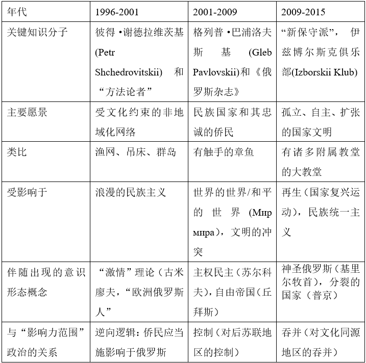

收录于合集

作品简介
【作者】 米哈伊尔·苏斯洛夫（Mikhail Suslov），哥本哈根大学跨文化与区域研究系助理教授。主要研究领域：俄罗斯思想史，意识形态与乌托邦，地缘政治与地缘政治理念，俄罗斯东正教会和当代俄罗斯政治。
【编译】 朱家羲（国政学人编译员，北京大学外国语学院本科生）
【校对】 赵婧如 丁昊
【审核】 晋玉
【排版】 卢奕财
【美编 】方引弓
【来源】 Mikhail Suslov (2018) “Russian World” Concept: Post-Soviet Geopolitical Ideology and the Logic of “Spheres of Influence”, Geopolitics , 23:2, 330-353, DOI 10.1080/14650045.2017.1407921
期刊简介
《地理政治学》（Geopolitics）于1998年创刊，期刊内容涵盖了地缘政治学的核心议题，如批判地缘政治理论和实践，政策、制度和选举地理学等。该刊是致力于当代地缘政治研究的国际性期刊，提供了一个可以从各种学科和方法论角度对地理与全球政治的交叉进行分析的学术平台，并欢迎能增进对全球政治的地理和多尺度动态的理解的理论、方法和方法论。根据Journal Citation Reports显示，2019年，该杂志的影响因子为2.650。
“俄罗斯世界”概念：后苏联地缘政治意识形态与“影响力范围”逻辑
“Russian World” Concept: Post-Soviet Geopolitical Ideology and the Logic of “Spheres of Influence”
Mikhail Suslov
内容提要
本文作者分析了“俄罗斯世界(Russian World/Русский мир)”这一地缘政治意识形态在俄罗斯知识界形成的三个阶段：（1996-2001, 2001-2009, 2009-2015），以及政治精英如何利用这一意识形态。“俄罗斯世界”理念形成的基础，是知识分子对散居世界各地、数目庞大的俄罗斯海外侨民究竟对俄罗斯有何意义的追问。作者认为，随着概念的发展俄侨在其中积极意义下降，“俄罗斯世界”从构建共同体的尝试，变为了具有排他性的、意指俄罗斯影响力范围的地缘政治意识形态。
01
绪论：定义“俄罗斯侨民”
本研究探讨了讲俄语的侨民群体在后苏联地缘政治意识形态中的角色和地位。“在此语境中，使用“侨民（diaspora，原指大流散的犹太人）”一词是否恰当是值得商榷的。但此处这个词用于指代一群居住在俄联邦境外，被政治领导层、官方思想家和基层民众认为是侨民或海外同胞的人。这种规范性的角度决定了“俄罗斯侨民”一词内在的复杂性与矛盾性。根据罗杰斯·布鲁贝克（Rogers Brubaker）[1]的研究，侨民并非一个实体，而是一种设想、一种愿景和一系列的实践，这意味着它“可以被制造和废除”。亲克里姆林宫的俄罗斯“海外同胞”概念建构者将他们的理论建立在一种假设上，即：这些人虽然居住在俄联邦境外，但他们对于共同的苏联历史有某种情感依恋，对俄罗斯文化有某种忠诚，对俄语有一定程度的了解。
如此观之，俄罗斯侨民群体非常庞大。根据联合国的调查结果，2015年，世界上约有1100万在俄罗斯出生的移民，这使得俄罗斯成为全球2.44亿移民大军中的第三大贡献者。存在海外巨量俄语使用者这一观念的象征性力量，使得“同胞”一词成为俄罗斯政治中重要的、充满感情色彩、有时甚至令人不安的因素。作者认为，目前俄联邦境外的俄语使用者群体仍处在较为零散的状态——来自中亚共和国、乌克兰、白俄罗斯、立陶宛和爱沙尼亚的俄语使用者；经济移民和西方国家的“俄罗斯妻子”；大学中的学者和科技专家；富有的“全球俄罗斯人”—— “同胞”之间的差异远大于他们之间模糊的文化相似性。这种特性为俄罗斯政治精英提供了解释“俄罗斯世界”概念的多种可能性。
表一：“俄罗斯世界”概念的意识形态迭代

02
**
**
第一阶段：以退为进
“俄罗斯世界”一词产生于一个名为“方法论者”的温和保守莫斯科知识分子团体，该团体脱胎于“莫斯科方法论团体（Moscow Methodological Circle）”，并与“效率政治基金会（Effective Politics）”、“新保守主义”团体有密切联系。“莫斯科方法论团体”由彼得·谢德拉维茨基的父亲、语言学家格奥尔基·谢德拉维茨基创建。基于语言学理论，彼得·谢德拉维茨基等人提出： 俄语以某种方式塑造了其使用者的精神世界，这使得他们的价值观、思维定式、生活方式和实践方式不同于其他人。 值得注意的是，他将懂俄语的双语使用者和外国人也列入了此行列。
1999年，彼得·谢德拉维茨基正着手研究如何可能阻止受教育的俄罗斯青年人离开俄罗斯的问题。统计数据表明，接受良好的教育青年几乎无一例外地决定在随后移民。那么，将钱投入俄罗斯教育还有意义吗？谢德拉维茨基将此问题与语言塑造论联系起来，他指出，只要一个受教育的青年在移民后仍使用俄语，其在文化上就仍然属于“我们”，用于教育的投资就不是一种浪费。（谢赫罗维茨基，2001）
这种推测促使谢德拉维茨基将全球俄语使用者的社群理论化，称之为“俄罗斯世界”。 他认为，由于海外俄罗斯侨民更好地适应了全球化进程，比核心的俄罗斯国家更重要。基于双重差异，居住在俄罗斯联邦之外的俄罗斯人形成了一个特殊种类的社群：他们不同于移民国的本地人，也不同于居住在俄罗斯本土的俄罗斯人。这种差异使得俄侨能够为俄罗斯提供接触其他国家知识和资本的机会，减少全球化进程对俄罗斯的伤害，将“俄罗斯性”调和为国际化的特性。彼得·谢德拉维茨基的该观点与19世纪俄罗斯历史学家瓦西里·克柳切夫斯基提出的俄罗斯特性高度相似。为了呼应这一理论，格拉基洛夫斯基提出了“俄罗斯的收缩是为了[让]俄罗斯群岛扩张，[让]俄罗斯世界传播。”的口号。这成为了网络项目 “俄罗斯群岛”(Русский Архипелаг, Russkii Arkhipelag, http://www.archipelag.ru)的口号，并团结了诸多温和保守亲政府的俄罗斯知识分子。支持该观点的知识分子认为，应当设想一个身份和边界都不同于帝国和民族国家的俄罗斯，使得业已收缩并碎片化的后苏联帝国遗产重拾意义。
“俄罗斯世界”理论彻底修正了帝国传统中的中央和边陲关系：知识分子邀请侨民对俄罗斯施加影响，而非相反。与此理论近似的项目还有“欧洲俄罗斯人”与“进步者”。这些项目都提出，应当由海外俄罗斯人担任创新者的角色，推动俄罗斯文化在世界范围的流动，使得不同文明之间的“俄罗斯世界”产生对祖国有价值的新思想、新文化和新做法。
03
第二阶段：“俄罗斯的触手”
“同胞（compatriot）”一词于1993年被引入政治辩论，俄罗斯政府希望通过一切手段，使“同胞”融入其驻在国，制止俄罗斯族人在苏联解体后的不受控制的回流。20世纪90年代末，侨民问题开始引起政府的关注。2001年，普京总统在第一次俄罗斯同胞大会（Congress of Russian compatriots）上发表讲话，第一次提及“俄罗斯世界”概念。
普京强调，“俄罗斯世界”超越了俄罗斯国家的正式边界，因为千百万“用俄语说话、思考——也许最重要的是——感觉”的人生活在俄联邦境外，却与俄罗斯保持着密切的联系。演讲的中心思想在于： 首先，俄罗斯不应该做侨民的施恩者，而应该做平等的伙伴。俄罗斯可以为海外侨民提供经济、政治和信息方面的知识，但侨民应当以新技术、投资的回流和俄罗斯国际形象的提升作为回报。 其次，当今世界，领土不再是人们身份认同的决定因素，取而代之的是他们的文化、价值观和语言。 2006年，普京重申了“俄罗斯世界”一词的文化意义，告诉知识分子群体“要更频繁地使用这个词”。
作者认为，这一阶段，“俄罗斯世界”从去中心化、赋予侨民特权的倡导转变为强调俄罗斯国家重要性和中心地位、将俄语侨民工具化的解释， 成为了一个将俄罗斯的海外存在转化为海外影响力的实践指南，充满了地缘政治意义。第二阶段的“俄罗斯世界”概念是与“主权民主（суверенная демократия, suverennaia demokratiia）”同步发展起来的。苏尔科夫借助卡尔·施密特的思想，将主权理论化为具有重要意义的核心政治价值，将“俄罗斯世界”概念的含义固定为有利于国家安全的非核心要素，与西方进行“信息战”的软实力武器。作者将这种组织逻辑比喻为章鱼触角：一个主权国家借助其侨民影响邻近的主权国家，为了巩固这种影响，侨民应当像触角一样结构良好、组织严密，并与母国的机构紧密结合。
作者指出，这一时期“俄罗斯世界”概念与“软实力”现结合，并被俄罗斯外交政策采纳，主要有两点策略：（1）将居住在俄罗斯联邦之外、与东道国文化融合程度较高的侨民视为对外宣传俄罗斯的窗口。（2）将西方国家的人权理论化用为反击武器，用于指责其忽视本国领土上侵犯人权的行为，声明R2P（Responsibility to Protect），用于扩大势力范围行为的合理化。
04
第三阶段：地缘政治实体
在20世纪90年代中期俄罗斯知识界公开论战中，克里姆林宫的首席政治舆论导向专家格列布·帕夫洛夫斯基（Gleb Pavlovskii）谈到“俄罗斯世界”时，提到了他的老师和朋友米哈伊尔·格夫特（Mikhail Gefter，1918-1995）——一位苏联时期的历史学家、持不同政见者。帕夫洛夫斯基认为，“俄罗斯世界”第一次理论化是格夫特的成果。在帕夫洛夫斯基的演绎中，格夫特的设想近似于塞缪尔·亨廷顿关于“文明的冲突”分析，但其理论没有后者明显的对抗意味。
格夫特认为， “世界”是跨国家和后国家的形态，行为体之间保持着密切的对话性关系，但在文化、政治、经济和道德问题上保持着不可或缺的差异。 在“世界”内部，各国会把自己组织成一个友好、文化上亲近的国际社群，该社群将成为核心国家的交流工具，与其他“世界”形成“世界”的世界，促进人类顺利进入全球化。其中，“俄罗斯世界”将松散地联合几个“俄罗斯国家”，因为俄罗斯文明足够强大、有活力，不需要单一政治空间的支撑，相反，它可以维持几个附属主权国家存在。
作者认为，第三阶段的“俄罗斯世界”理论将政治复杂性简化“世界”之间的合作与竞争，而忽视了较小的政治主体与文化。按照这一阶段的思路，“俄罗斯世界”不是俄罗斯文化与邻国的文化斗争，而是俄罗斯与其实力相当的国家（如美国、德国、法国等）的文化影响斗争。
2000年代的俄罗斯新保守主义知识分子希望使俄罗斯民族主义成为一股强大但服从国家支配的力量。他们发展“俄罗斯世界”理论，将其变为一种知识工具，证明俄罗斯作为一个自给自足的文明，不需要任何追赶性质的现代化进程，也不需要西方的任何承认。
作者指出，近年来 “俄罗斯世界”概念所隐含的地缘政治意义、“文明世界”修辞意味和反西方中心主义的主旨凸显出来。这种修辞将“俄罗斯世界”的愿景框定为一种独特的文明，位于独特的领土上，由单一的政治主体统治，并与其他文明争夺资源和影响。它的意义变得与“复原俄罗斯土地”（irredentism）的理念先关联， 与作为去地域化的俄语使用者网络共同体的最初意义相去甚远，甚至成为了中心地缘政治的典型案例。
发生于2014年的克里米亚危机，助推了俄罗斯官方意识形态的保守主义转向，“俄罗斯世界”的概念出现了新的变化，并在几个内部相互关联的方面被投入实践。
首先，“俄罗斯性”不再被想象为多种属性的杂糅，而被想象为一个单一的同一性链条：“俄罗斯世界”现在被定义为俄罗斯人、俄罗斯国家、俄罗斯土地、俄罗斯文化和俄罗斯价值的整合。在历史层面，“俄罗斯世界”不再意味着一个未来主义的国家改革计划，而是一个将俄罗斯产生和发展的不同历史时期归入同一进程的理念。
其次，“俄罗斯世界”中的侨民成分被冲淡。帕夫洛夫斯基的同僚，记者和政论家马克西姆·科诺年科（Maxim Kononenko）认为。生活在境外的俄罗斯人不再是俄罗斯人。“你们必须选择，”他对移民说，“在俄罗斯世界和伦敦之间选择。俄罗斯世界里没有伦敦，没有拉脱维亚，俄罗斯世界是俄国人所在的地方，伦敦和拉脱维亚都没有俄罗斯人。俄罗斯人都坐在家里。” “俄罗斯世界”被解释为一种孤立的民族统一主义者观点，而非侨民散布全世界的图景。
另一方面，作者指出，第三阶段包含某些地区将俄罗斯“文明之根”古希腊化的倾向。这种解释通过身份和归属问题，减少了侵犯他人主权的(地缘)政治和道德限制。基里尔牧首对此作出了重要贡献：他对外使用“俄罗斯世界”，对教会内部使用“神圣俄罗斯”，指代998年罗斯受洗后的罗斯公国衍生出的诸政治主体总和，并认为“神圣俄罗斯”应当与其他文明体并立。这种解释与“世界”的世界（World of “world”）具有相似性，倡导一个具有文明和文化亲缘性的主权国家联合体。
第三阶段的“俄罗斯世界”概念有 地缘政治化和古希腊化解释并行 的特点，作者引用学者亚历山大·杜金（Aleksander Dugin）的观点指出，现阶段强调身份的“俄罗斯世界”模式，难以在西方现代性标准语境中制度化。在“俄罗斯世界”概念发展的第一阶段和第二阶段，其被明确定位为现代化的工具。
亚历山大·杜金敏锐地把握住了俄罗斯官方叙事的变化，他认为： 现有的“俄罗斯世界”是一种倒退，它不再是对主权的固守，反而破坏了现代性的主权概念，并为俄罗斯联邦提供了其他的合法性来源。 亚历山大·普罗汉诺夫（Aleksandr Prokhanov）主办的斯大林主义和爱国主义报纸《晨报（Zavtra）》提出了对当代“俄罗斯世界”概念最直白的隐喻：俄罗斯世界是一座宏伟的大教堂，它曾经被分割成各种小圣堂（sidechapel），但今天“它们又重新聚集起来。”
05
结语
本文作者总结，“俄罗斯世界”概念的演变为重新认识21世纪如何理论化“势力范围”提供了一整套方法。作者强调，即使是最具包容性和非侵略性的后帝国“文化光环”图景，也需要对抗来自右翼、怀念卡尔·施密特所描述的“大空间（Grossräume）”——通常理解为被排除在全球规范秩序之外的领土，或理解为亨廷顿提出的冲突的文明——针对全球化的批评。从这个意义上说，“俄罗斯世界”概念的变化已经暴露出，意识形态上的边缘政策，最终演变为对兼并主义和对抗政策的公然合理化。
译者评述
本文作者将分析视角集中在意识形态领域，较好的描述了“俄罗斯世界”概念如何从语言学理论产生，经历地缘政治意义上升、文化意义下降的发展，并逐渐定型为一种中心地缘政治理念的过程。文章的行文背景和基础逻辑，是苏联解体后俄罗斯知识精英和政治精英面对全球化挑战，不断调整以使自身适应的长轨进程。“俄罗斯世界”内涵的变化，反映出俄罗斯地缘政治意识形态近30年来的保守主义转向。作者以2014年克里米亚危机为关键节点，指出此后的“俄罗斯世界”概念转变为以文化亲缘性为基础的势力范围逻辑，完成了从去中心化到再中心化的转变。
本文的分析也有一定局限性。文章起点是侨民问题，然而随着“俄罗斯世界”理念的转向，作者也逐步放弃了对俄侨现状的分析。在未选入编译文章的部分，作者分析了第二阶段政策设想实现的种种困难，其中指出：在海外适应较好的俄罗斯移民更便于接触当地媒体，提振俄罗斯国际形象；然而，适应较好的移民通常更倾向于对俄罗斯作出否定性评价。这样的现实问题与意识形态的对照分析在第三阶段消失了，有损文章的完整性，也为读者提供了了解相关领域其他分析的需求。
参考文献
[1] Brubaker, R. 2005. The ‘diaspora’ diaspora. Ethnic and Racial Studies 28 (1):1–19. doi:10.1080/0141987042000289997.
文章观点不代表本平台观点，本平台评译分享的文章均出于专业学习之用, 不以任何盈利为目的，内容主要呈现对原文的介绍，原文内容请通过各高校购买的数据库自行下载。
**
**
**
**
**
**
添加 “国小政”微信
获取最新资讯


国政学人
支持学术公益与知识传播
微信扫一扫赞赏作者 __赞赏
已喜欢，对作者说句悄悄话
取消 __
发送给作者
发送
最多40字，当前共字
上一页 1/3 下一页
长按二维码向我转账
支持学术公益与知识传播
受苹果公司新规定影响，微信 iOS 版的赞赏功能被关闭，可通过二维码转账支持公众号。